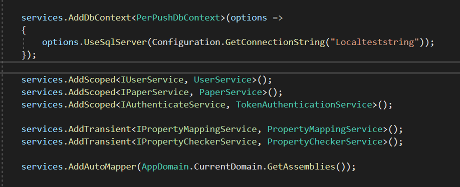
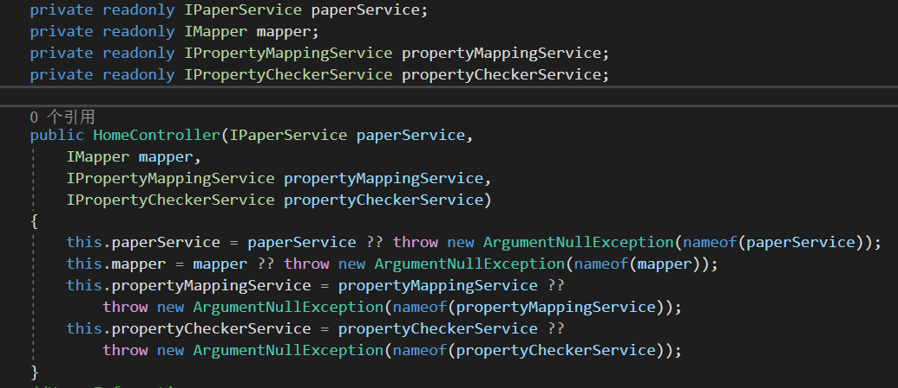

当使用一些框架构建Web应用时，一般都会涉及到两种东西，一种叫做Web容器，术语称为IOC(Inversion of Control)，与之对应的就是依赖注入DI(Depend Injection)，很多人喜欢把IOC直接称之为控制反转，这是没有问题的，但是对于刚接触开发的人来说，这个名词很有可能会直接让他一脸茫然。
- IOC与DI是完全不同的概念，一定要避免混淆
- 使用IOC进行解耦合
生命周期
如果你是开发人员，那么你一定了解生命周期，构建代码的时候我们可能会考虑一个变量是否应该被设置为全局变量、局部变量、或是静态变量等，至于具体如何使用就要考虑到具体业务。
构建Web应用时也是同样，在软件开发早期，我们没有可用的框架，也没有IOC与DI这些概念，所以Web应用中存在的服务模块，我们通常会去手动构建并管理这些服务，我们需要去考虑在何时去回收这些服务，如果项目模型比较小的时候我们这样管理起来，只要考虑的多一点还是没有问题的，但是随着项目模型越来越大，我们不得不考虑的更多，而且很有可能因为业务问题而构建出违反设计原则的代码，代码耦合度也可能不忍直视。
IOC的出现正是为了解决服务模块的生命周期管理问题，你不再需要详细分析每个服务模块何时该被释放又何时被初始化，交给容器去做吧！
IOC(Inversion of Control)
既然IOC是为了解决服务的生命周期管理的，因为它还没有那么智能到推测每个服务应该使用什么生命周期，那么它之中的每个服务在存放时也一定会有准确的生命周期，这是我们必须告诉它的。
IOC中一般会有三种生命周期，大致如下：
- Transient
- Scoped
- Singleton
可能你所使用的框架中生命周期的名称和这个不太一样，但是核心思想都是差不多的
我不太喜欢直接把IOC的全称直接翻译为中文理解，控制反转这个名字会让人感觉很玄，很难让人理解。
理解IOC，只需要想象你的应用中包含了一个黑盒子，这个盒子中存放了一些你所需的模块，在你将新的服务放进这个黑盒子时，你只需要告诉它这个服务的生命周期，剩下的事情你就不需要再去关心，你只需要专心构建业务代码即可。
如果你不使用IOC，你一定会创建一个服务的实例，才能去使用它。这个时候你的动作是创建，如果你使用了IOC，所发生的动作就从创建变成了拿，控制反转所表达的正是这个动作发生了变化
Transient
这是生命周期最短的一种，当用户每次请求应用时，该种生命周期被初始化，在每次请求结束时，生命周期结束，对应的服务被回收。
Scoped
Scoped适用于多数服务，当用户进行一次HTTP请求，该种生命周期被初始化，在HTTP请求结束，对应的服务被回收。
Singtelon
Singtelon有点类似单例模式，当Web应用被初始化，Singleton周期的服务被随之初始化，直到应用被关闭，该服务生命周期结束。也就是说使用Singtelon注册的服务其生命周期随着应用的初始化
在.NET Web 应用中使用IOC注册服务

注意一个细节，这里使用到了接口，这正是OOP思想，使用接口而并非实例，这样创建的每个服务实例和容器中的服务接口就解耦合了，当使用容器中的服务时，我们只需要拿到那个接口即可。
这只是一个简单的例子，目的只是为了演示如何将服务存放在容器中。
虽然该代码中使用到了DbContext这个服务，但其实这些服务的底层实现还是这三种生命周期中的一种，这是开发框架为了让开发者使用IOC时更加方便所以对一些常用服务进行了扩展。
DI(Depend Injection)
常见的依赖注入方法有三种：
- 构造方法注入
- 属性注入
- 方法注入
构造方法注入

这是我最常用的注入方式了，我也只介绍这一种注入方式，其余注入方式和这个方式是差不多的，上边的例子是.NET Core应用中使用构造函数注入，使用了C#语法糖??，表示当??左边的表达式未被正常执行时，就执行右边的表达式，这是为了防止当从IOC容器中取出服务时，服务未被正常拿到时去使用它一定会发生空引用异常，我们需要防止这种情况的发生。所以在每次请求时都应该去捕获异常，避免发生一些意想不到错误。如果你构建的是企业项目，你应该将这些捕获到的异常写入到日志中。
如果你发现我的博客中有任何表达不正确的地方都可以反馈给我Email:erosionzhu@outlook.com